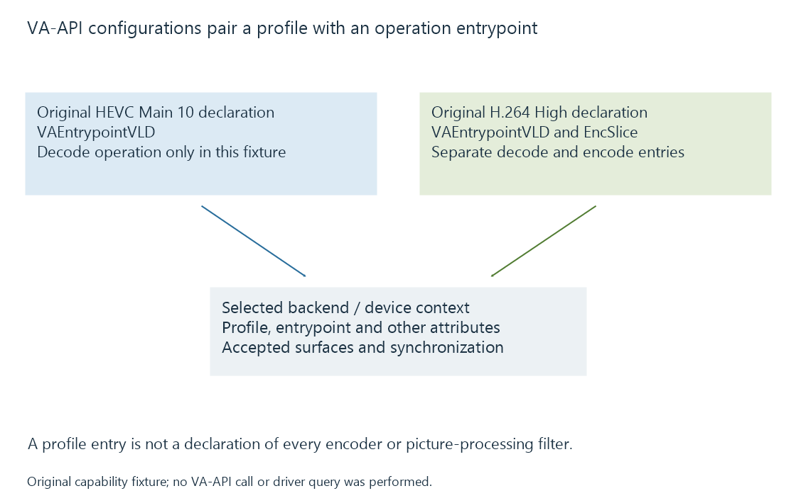

Video Acceleration API (VA-API)
VA-API exposes video decode, encode and processing operations through profile/entrypoint configurations implemented by a selected device driver backend.
VA-API, the Video Acceleration API, exposes supported video operations through a selected implementation and device. Its configuration combines a codec/profile, an operation entrypoint and other attributes.
The interface covers decoding, encoding and video processing. A particular backend supplies the operations available for its supported hardware and software configuration.
A profile and an entrypoint form a useful query
A profile identifies a coded configuration. An entrypoint identifies the requested operation within the API.

This original readable capability fixture illustrates the distinction:
{
"device": "model-render-node",
"profiles": [
{
"profile": "VAProfileHEVCMain10",
"entrypoints": ["VAEntrypointVLD"]
},
{
"profile": "VAProfileH264High",
"entrypoints": ["VAEntrypointVLD", "VAEntrypointEncSlice"]
}
]
}
Under this invented declaration, the HEVC entry supplies a decoding operation; the H.264 entry supplies separate decode and encode operations. It does not declare HEVC encoding or any processing filter.
The fixture is not actual vainfo output or an Emby device response. The published API identifiers show why one profile name should not be interpreted as every possible operation.
The backend implements the operation
Libva supplies the interface layer and backend arrangement. Driver backends connect it to the appropriate hardware/driver stack.
The loaded backend and selected device therefore matter to the query. Two configurations using the VA-API interface can expose different results.
In Emby's Linux documentation, VA-API identifies an available family of acceleration routes. The actual initialized profile/entrypoint and source/target properties identify a session's operations.
Surfaces provide the picture relationship
A context uses appropriate picture surfaces and parameter buffers for the selected operation. A decoder's usable output must fit a later processor or encoder.
The API exposes configuration and surface attributes as well as profile lists. Bit depth, dimensions and accepted surface layout are additional facts a pipeline needs.
Video processing has its own capabilities and input/output relationships. Decode support does not, by itself, supply HDR conversion or every overlay operation.
Submission and completion have different stages
The application supplies the necessary picture parameters and codec data using the configured context. The driver-backed operation can still be executing after its submission is accepted.
A consumer needs suitable synchronization before it reads the result. Surface ownership also continues while later stages or decoding references still use that storage.
Libva's thread-safety documentation separates safe API implementation from the application's responsibility to synchronize operations on shared objects. A thread-safe library does not arrange every application-level media dependency automatically.
Frame sharing adds the resource-transfer boundary when another compatible interface consumes the pictures.
See Also
- VA-API driver backends
- DRM PRIME and DMA-BUF frame sharing
- Intel VPL and the oneVPL name
- Hardware decoding and software decoding
- Hardware encoding and software encoding